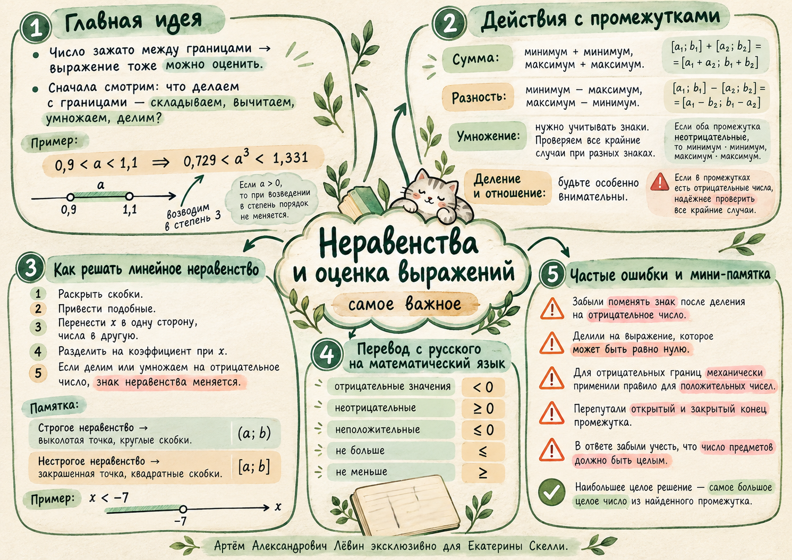

Математика · занятие 10 октября 2026
Оценка выражений и неравенства
От оценки величины по границам — к линейным неравенствам, целым решениям и условиям реальных задач. В центре внимания — смысл каждого преобразования.

Екатерина Скелли
8 класс · Лёвин Артём Александрович
01 / ГРАНИЦЫ
Как оценить выражение
Точное число может быть неизвестно — достаточно знать промежуток, в котором оно находится, и учитывать свойства действий.
Прибавляем меньшие границы друг к другу, большие — друг к другу: если a ≤ x ≤ b и c ≤ y ≤ d, то .
Наименьшая разность: меньшее − большее. Наибольшая: большее − меньшее. .
При разных знаках удобно перебрать четыре произведения концов: , затем выбрать минимальное и максимальное.
02 / ОГРАНИЧЕНИЯ
Деление требует проверки
Больший положительный знаменатель даёт меньшее частное. Но если возможен нуль, оценивать частное конечными границами обычно уже нельзя.
Положительный знаменатель
Это оценка числа песен через длительность одной композиции. Если суммарное время ровно 120 минут, то целое количество композиций находится в пределах 22 ≤ N ≤ 34.
Отрицательные границы
Здесь полезно проверить все четыре граничных частных. Если u = b/a, v = b/c и b ≠ 0, то u/v = c/a.
Обязательное ограничение. При −1 ≤ n ≤ 3 значение n = 0 допустимо. Поэтому k/n при n = 0 не определено; при k ≠ 0 и n, близком к нулю, модуль частного неограниченно растёт.
03 / АЛГОРИТМ
Линейное неравенство
Собираем все слагаемые с неизвестной в одной части, числа — в другой, а затем контролируем знак коэффициента.
- Раскройте скобки и приведите подобные слагаемые.
- Перенесите слагаемые с x в одну сторону, числа — в другую.
- Разделите на коэффициент при x. При отрицательном коэффициенте поменяйте знак неравенства.
- Запишите ответ промежутком и при необходимости отметьте его на числовой прямой.
< или >: пустой кружок, круглые скобки.
≤ или ≥: закрашенная точка, квадратные скобки.
Возле −∞ и +∞ всегда круглая скобка.
04 / ЯЗЫК
Слова превращаются в знаки
Спросите себя: условие допускает равенство или нет? От этого зависит, будет ли знак строгим.
05 / ПРИМЕНЕНИЕ
Особые случаи и целые ответы
Решение неравенства завершается проверкой смысла результата: допустимы ли все значения, требуется ли целое число, может ли решений не быть?
— верно при любом x, поэтому x ∈ ℝ. А — ложно всегда, решений нет.
При числовых знаменателях 15, 5 и 3 умножаем каждый член обеих частей на 15 > 0, чтобы убрать знаменатели, сохраняя направление знака.
. После раскрытия скобок квадратные члены взаимно уничтожились.
. Покупаем максимум 41 тюльпан вместе с корзинкой.
06 / ПУТЬ А
10 задач для закрепления
Задания идут от оценки простых выражений к неравенствам и текстовой модели. Сначала оформите решение самостоятельно, затем откройте проверку.
Известно: 0,7 < a < 1,1. Оцените a³.
Ответ и контроль
0,343 < a³ < 1,331. Нечётная степень сохраняет порядок.
Известно: 4 < t < 6. Укажите промежуток для 24/t.
Ответ и контроль
4 < 24/t < 6. На положительных знаменателях порядок границ меняется.
Пусть −2 ≤ k ≤ 1 и −1 ≤ n ≤ 3. Оцените k+n и k−n.
Ответ и контроль
−3 ≤ k+n ≤ 4; −5 ≤ k−n ≤ 2.
При тех же условиях найдите границы kn. Можно ли ограничить k/n конечными нижней и верхней границами для всех допустимых k и n?
Ответ и контроль
−6 ≤ kn ≤ 3. Для k/n общих конечных границ нет: n может быть равен нулю или сколь угодно близок к нему.
Известно: −0,9 < u < −0,8 и −0,9 < v < −0,8. Оцените u/v.
Ответ и контроль
8/9 < u/v < 9/8. Для отрицательных границ проверьте крайние частные.
Решите два неравенства: а) −2x > 14; б) 2x+3 ≥ 5x−6.
Ответ и контроль
а) x ∈ (−∞; −7); б) x ∈ (−∞; 3].
Решите неравенство 3(x−1)+5 > 7−3x+2.
Ответ и контроль
x > 7/6, то есть x ∈ (7/6; +∞).
Укажите множество решений: а) x+6 > x; б) x+6 < x.
Ответ и контроль
а) ℝ — все действительные числа; б) ∅ — решений нет.
Найдите все отрицательные целые решения неравенства:
.Ответ и контроль
x > −8/3; отрицательные целые решения: −2 и −1.
Тюльпан стоит 45 руб., корзинка — 150 руб. Какое наибольшее целое количество тюльпанов можно купить вместе с корзинкой за 2000 руб.?
Ответ и контроль
41 тюльпан: 45·41+150=1995 ≤ 2000, а 45·42+150=2040 > 2000.
07 / ПАМЯТКА
Материалы занятия
Полный разбор — в пособии; компактное повторение — на постере. Можете вернуться к лаборатории и самостоятельно изменить параметры.
